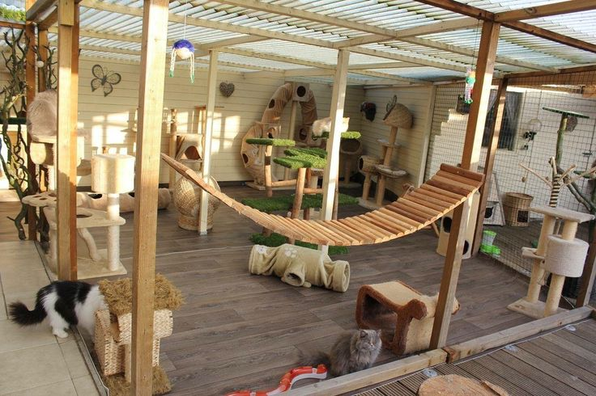
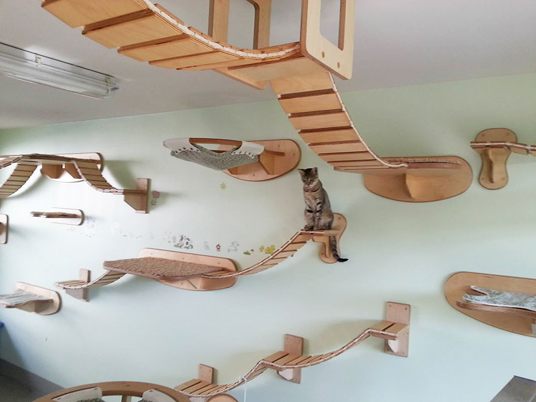
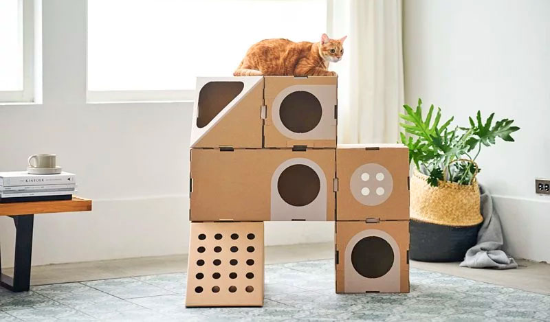
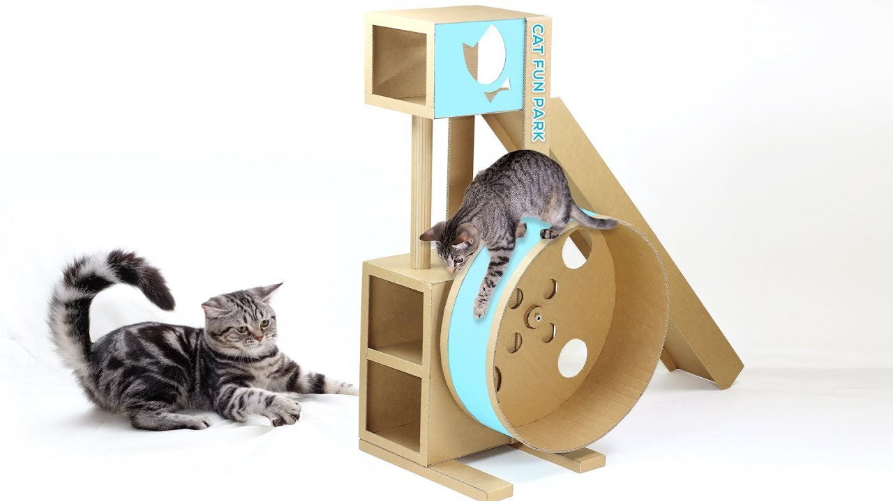
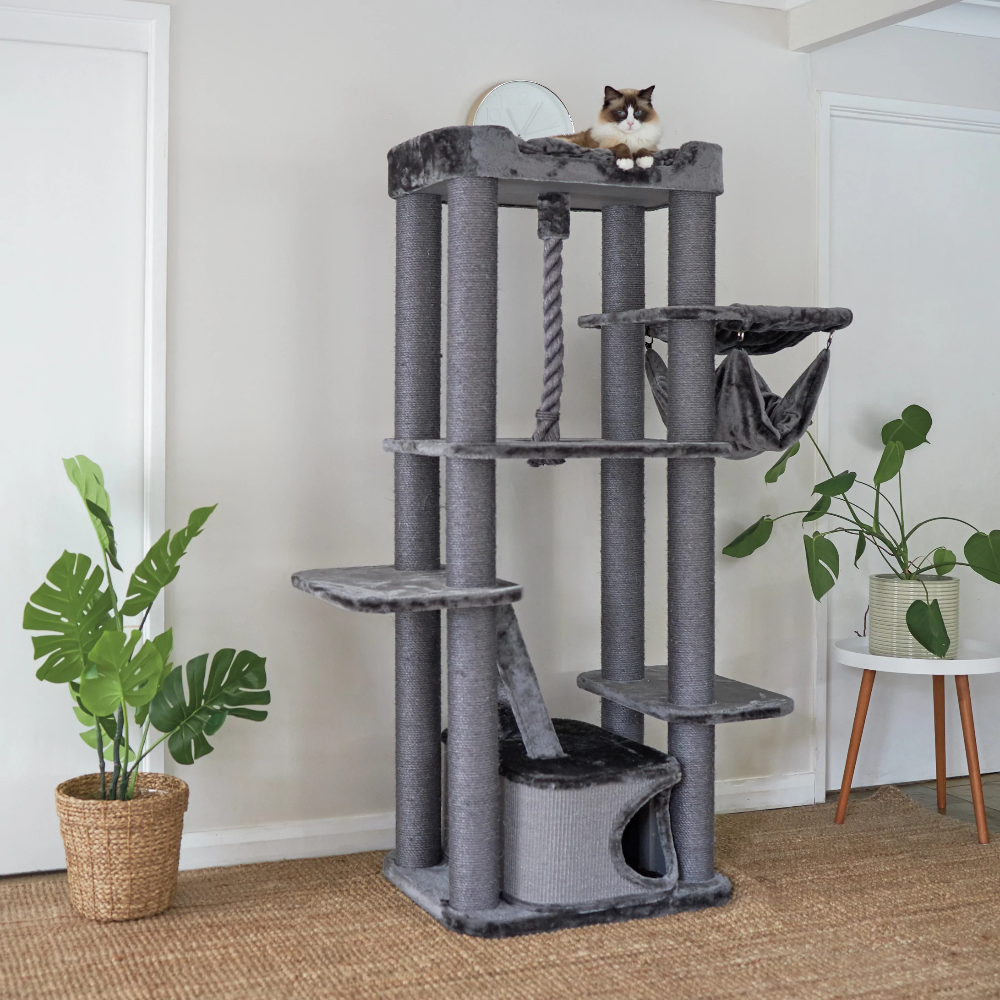

You can put up shelves and perches for your cats to climb and enjoy. According to CatsPlay, a cat furniture store, wall-mounted shelves and perches “are a great space-saving idea for small spaces and apartments when you don't want to take up valuable floor space. While specifically designed cat toys like feather wands, toy mice and balls that make sounds are great for cats, so are balls of yarn and crumpled pieces of paper. Cats are relatively easy to please2. A good idea is to rotate their toys around, and always put them away after playtime finishes. If you feel that your cat's a little under-stimulated, setting aside some space in your home or garden as a cat playground can be the ideal way to stave off feline boredom and give your furry little pal plenty of opportunities for exercise and excitement. Cats love vertical space so you can maximize a small area by adding several vertical shelves and perches. If space is limited, a window box catio is a great option. If you want to enjoy the catio too, a 6'x8' or 8'x10' size catio will allow space for seating and bonding with your cat.





To make a cat jungle gym and playground, try cutting holes in cardboard boxes and then stacking them using cardboard tubes as support posts so the jungle gym has multiple levels. You can also hang toys inside the boxes and line the bottoms with soft blankets or a pillow to make your cat comfortable. If you can put them in the pen when you go out or at night you can be sure that they are not getting themselves into trouble. The pen also gives them time out if you have dogs, other cats or children as kittens do need a lot of sleep. They feel safe inside and soon learn to snuggle up in their bed. Unless they're eating or sleeping, kittens are always at play. And as much fun as it is to watch your little furball cavort, you can't keep an eye on them all day long. That's where a good kitten playpen comes in. Kitten enclosures come in all shapes, sizes, and materials.